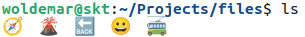

6. Работа с файлами#
Введение#
При работе с компьютером пользователь прямо или косвенно касается файлов и каталогов. В них размещается система и ее состояние: данные и программы, файлы настроек, справочная информация. Умение обращаться с файловой системой показывает насколько эффективно пользователь будет работать с компьютером.
Файловая система для пользователей Windows ассоциируется с корзиной, ярлыками, папками и дисками.
Для обзора и манипулирования файлами в среде рабочего стола применяют файловый обозреватель.
Продвинутые пользователи используют двухпанельные файловые менеджеры: “Far” и “Total Commander” в Windows и “Midnight Commander” (утилита mc) в UNIX.
Note
Для пользователя Windows привычнее термин “папка”, чем “каталог”. Папка – это объект применительно к графической среде. На системном уровне и в среде UNIX предпочитают использовать термин “каталог”.
Файловая система (далее ФС) определяет структуру представления файлов и каталогов на дисках и предлагает операции для их просмотра и изменений. Здесь мы посмотрим на нее с точки зрения пользователя командной строки.
Файлы и каталоги#
Данные в ФС хранятся на диске в виде файлов. Файл представляет часть дискового пространства, выделенной ОС для хранения данных. Файл является результатом сокрытия диска от программ, своего рода абстракция. Доступ программы к диску происходит только через файл. Современные ОС не накладывают ограничений на содержимое файлов. В них можно записывать любой набор байтов и любой длины, пока достаточно дискового пространства. Также система не интересуется смыслом записываемых данных, т.е. форматом файла. Это отдается на усмотрение пользователя и приложения. Что именно хранится в файле – видео, изображение или текстовый документ – от этого ФС абстрагируются.
В системе содержится большое количество файлов различного содержания.
Чтобы организовать их в удобную структуру, они группируются в каталоги.
Внутри каталога могут размещаться не только файлы, но и другие каталоги.
В результате файлы и каталоги образуют иерархическую систему, называемую деревом каталогов.
На вершине дерева размещается корневой каталог, который не входит ни в какой другой каталог.
В UNIX корневой каталог обозначают символом /.
Note
В Windows, в отличие от UNIX, присутствуют несколько корневых каталогов, называемых дисками. Имя диска состоит из буквы алфавита и последующим за ней двоеточием:
системный диск
C:;диск
D:с пользовательскими данными;сетевые диски
X:,Y:,Z:;съемный диск
E:.
С каждым файловым объектом (файлом и каталогом) связано имя.
В пределах одного каталога имена файловых объектов не совпадают, но они могут совпадать в разных каталогах.
Чтобы однозначно идентифицировать объект в ФС, с ним связывают полный путь – последовательность имен каталогов от корневого до искомого файла, разделенных символом косой черты (/).
В пределах одной системы, полный путь уникален для каждого файла и однозначно определяет его расположение в ФС.
Note
В Windows в путях используют символ обратной косой черты (\).
Полный путь к файлу часто оказывается слишком длинным, что усложняет его набор. Сослаться на файл по имени также не получится из-за неоднозначности. Поэтому используют подход с относительным путем к файлу. Для этого вводят понятие текущего каталога, относительно которого составляют путь к файловому объекту. Такой путь называют относительным. Оболочка хранит и управляет полным путем к текущему каталогу. Полный путь формируется как объединение текущего каталога с относительным путем. Относительный путь отличается от полного тем, что не начинается с корневого каталога.
При написании пути указывая каждый раз имя каталога мы спускаемся вниз по дереву каталогов.
Но можно и подняться наверх.
Любой каталог, кроме корневого, находится внутри другого каталога, называемого родительским.
Родительский каталог обозначают символами ...
Файловые объекты с точки зрения пользователя делятся на системные и пользовательские. В системных каталогах хранятся файлы, необходимые для функционирования системы. Системный каталог изменяется, если обновляют программу, изменяют настройку компьютера или устанавливают новую программу. Это может выполнить только специальный пользователь с привилегиями – системный администратор, также известный как суперпользователь. Для обычного пользователя выделяют отдельный каталог, называемый также домашним каталогом этого пользователя. Содержимое домашнего каталога полностью принадлежит его пользователю. Он может добавлять, изменять и удалять файлы и каталоги в нем.
Именование файлов#
С каждым файлом связано имя, уникальное в пределах каталога. Имя задается при создании файла и может быть изменено в будущем.
UNIX, в отличие от Windows, различает регистр символов в имени файла.
Это значит, что имена projects и Projects будут соответствовать разным файлам.
Note
Регистр символа в именах также по-разному учитывается в языках C++ и Fortran.
Часть имени с последней точки в конце называется расширением файла.
Расширение подсказывает пользователю или системе формат файла и то, какой программой можно его открыть.
Примеры расширений: .txt, .jpg, .png, .pdf, .odf, .docx, .avi.
Среда рабочего стола по расширению подбирает для файла значок для отображения и приложение, в котором откроется файл при активации значка.
Современные ОС используют формат UTF8 для внутреннего представления строки. Это позволяет использовать в именах файлов любые символы таблицы UNICODE. Она включает символы алфавитов всех существующих и существовавших письменностей мира, символов эмодзи, нотной нотации и многое другое. Ваша файловая система может выглядеть как на рисунке ниже.
В UNIX в именах файлов запрещены только два символа (/ и \0), используемые в служебных целях.
Символ косой черты разделяет имена в путях, а нулевой символ указывает на конец строки во внутреннем представлении.
Но это не значит, что можно использовать все остальное.
Следует отказаться от непечатных символов, потому что не всегда их получиться отобразить на экране или ввести с клавиатуры.
Также не рекомендуется именовать файлы нелатинскими символами, так как переключение раскладки клавиатуры в виртуальном терминале затруднительно.
Дополнительно, но не обязательно, отказываются от пробела в имени, иначе придется обрамлять аргумент в кавычки, и заглавных символов, ввод которых замедляет работу с компьютером.
Перемещения в файловой системе#
Перемещение (или навигация) по ФС означает изменение текущего каталога. Говорят, что пользователь находится в этом каталоге.
Текущий каталог указывается в строке приветствия.
Его имя хранится в переменной окружения PWD и может быть выведен на экран командой echo $PWD.
То же самое действие выполняет команда pwd, образованная от сокращения слов “print working directory”.
Пользователь при входе в систему попадает в домашний каталог с полным именем /home/user_name, где user_name – имя пользователя в системе.
Домашний каталог коротко обозначают символом ~.
Полный путь к домашнему каталогу содержится в переменной окружения HOME.
Для изменения текущего каталога, а значит и перемещения по ФС, применяют команду cd, которая образована от сокращения “change directory”.
Новый текущий каталог передается ей через аргумент.
Если аргумент не передан, то перемещение происходит в домашний каталог.
Note
Команды cd, cd ~ и cd ${HOME} эквивалентны.
woldemar@skt:~/Projects/files$ echo $HOME
/home/woldemar
woldemar@skt:~/Projects/files$ cd ~
woldemar@skt:~$
Note
Заметим, что текущим может быть только каталог и переместиться в файл не получится.
Бывает необходимо быстро вернуться туда, откуда пришел.
Команда cd - возвращает в предыдущий каталог.
Путь к предыдущему каталогу содержится в переменной окружения OLDPWD.
Tip
Каталог |
Обозначение |
Переменная |
|---|---|---|
корневой |
|
|
родительский |
|
|
домашний |
|
HOME |
текущий |
|
PWD |
предыдущий |
OLDPWD |
Изучение файловой системы#
Для просмотра содержимого каталогов применяют команду ls (образована от “list”).
Без аргументов она выводит содержимое текущего каталога.
Если ей передаnm путь к каталогу, то выведет файлы из этого каталога.
Это позволяет посмотреть содержимое каталога, не переходя в него.
С файлом связано не только содержимое, но и дополнительная информация:
когда создан и изменен файл;
кому принадлежит файл;
кто и что может делать с файлом.
Структура вывода команды ls -l.
Команда ls по умолчанию выводит только имена файлов.
Она выведет дополнительные сведения о файлах, если указать опцию -l (образована от “long”).
Разберем вывод команды.
woldemar@skt:~/Projects/json$ ls -l
итого 508
drwxrwxr-x 6 woldemar woldemar 4096 апр 17 2023 build
-rw-rw-r-- 1 woldemar woldemar 2634 апр 17 2023 BUILD.bazel
-rw-rw-r-- 1 woldemar woldemar 304881 апр 17 2023 ChangeLog.md
-rw-rw-r-- 1 woldemar woldemar 410 апр 17 2023 CITATION.cff
drwxrwxr-x 3 woldemar woldemar 4096 апр 17 2023 cmake
-rw-rw-r-- 1 woldemar woldemar 7144 апр 17 2023 CMakeLists.txt
drwxrwxr-x 6 woldemar woldemar 4096 апр 17 2023 docs
drwxrwxr-x 3 woldemar woldemar 4096 апр 17 2023 include
-rw-rw-r-- 1 woldemar woldemar 1076 апр 17 2023 LICENSE.MIT
drwxrwxr-x 2 woldemar woldemar 4096 апр 17 2023 LICENSES
-rw-rw-r-- 1 woldemar woldemar 13438 апр 17 2023 Makefile
-rw-rw-r-- 1 woldemar woldemar 629 апр 17 2023 meson.build
-rw-rw-r-- 1 woldemar woldemar 19578 апр 17 2023 nlohmann_json.natvis
-rw-rw-r-- 1 woldemar woldemar 110430 апр 17 2023 README.md
drwxrwxr-x 3 woldemar woldemar 4096 апр 17 2023 single_include
drwxrwxr-x 14 woldemar woldemar 4096 апр 17 2023 tests
drwxrwxr-x 7 woldemar woldemar 4096 апр 17 2023 tools
-rw-rw-r-- 1 woldemar woldemar 34 апр 17 2023 WORKSPACE.bazel
-rw-rw-r-- 1 woldemar woldemar 608 апр 17 2023 wsjcpp.yml
В первой строке (“итого 508”) указан размер содержимого в блоках. Один блок занимает 1 Кб пространства. При подсчете размера каталога учитывают только объем, занимаемый служебной информацией, но не вложенными данными.
Каждая следующая строка в таблице показывает информацию о файлах (и каталогах).
Первый символ в каждой строке указывает на тип файла.
Каталоги обозначены символом d, а обычные файлы символом -.
Следующие девять символов в строках показывают режим доступа к файлу.
Они показывают, что может сделать пользователь с ними.
Всего определено три действия – прочитать и изменить содержимое, а также запустить файл на исполнение.
Разрешение этих действий указывается символами r (read), w (write), x (executable).
Если действие запрещено, то вместо этих символов стоит символ -.
Режим доступа определяется для трех групп пользователей.
Далее идут:
количество ссылок на файл;
владелец файла;
группа пользователей, которые владеют файлом;
размер файла;
время последнего изменения файла;
название файла.
Изменение файловой системы#
Модификация ФС охватывает три действия – создать, удалить и изменить.
Файл может создать любое приложение для редактирования, если воспользоваться командой “Новый файл”, например в текстовом редакторе.
Быстро создать новый пустой файл можно командой touch если передать ей имя несуществующего файла.
Новый каталог создается командой mkdir (образована сокращением от “make directory”).
Обратная операцию к созданию – удаление – доступна с командой rm (образована сокращением от “remove”).
Она удаляет как файлы, так и каталоги.
При удалении каталога команде передают опцию -r (образована от “recursive”), указывая на необходимость рекурсивно удалять вложенные файлы и каталоги.
Файлы и каталоги копирует команда cp (образована сокращением от “copy”).
Первым аргументом она принимает копируемые объекты, а вторым аргументом – место назначения.
Перемещение файлов и каталогов выполняет команда mv (образована сокращением от “move”).
Порядок аргументов аналогичен команде копирования: что и куда перемещается.
Логически, она объединяет копирование и удаление, но фактически делает это эффективнее за счет того, что вместо перемещения данных, меняет служебные записи, оставляя данные на месте (если перемещение происходит в пределах одного диска).
Перемещение также решает задачу переименования, если происходит в пределах одного каталога: mv file.txt file.doc.
Подстановка имен файлов и метасимволы#
Команды копирования, перемещения, удаления и другие могут быть применены к группе файлов, имеющих общую структуру в именах.
Например, имеют одинаковое расширение или в составе имени содержат определенную строку.
Для указания правил, по которому будут выбираться файлы, используют регулярные выражения, которые расширяясь превращаются в имена файлов.
При указании имени файла используют метасимволы *, ?, […], [!...].
Метасимвол * заменяет собой один или более символов.
Перечислим примеры их использования:
build/*– все файлы и каталоги в каталоге build;*.sh– все файлы с расширением.sh;build*– все файлы, начинающиеся со строкиbuild;build*.sh– все файлы, начинающиеся со строкиbuildи с расширением.sh;*/*.sh– все файлы с расширением.shво вложенных каталогах.
Метасимвол * применим в аргументах команды cd.
Переход из домашнего каталога в каталог Downloads, понимая, что еще есть рядом каталоги Desktop и Documents достаточно набрать cd Dow*.
Метасимвол ? обозначает произвольный символ в имени:
???– файлы с именем из трех символов;????.png– файлы с четырьмя символами в имени с расширением.png.
Метасимволы * и ? обозначают произвольные символы.
Но что делать, если нам нужен диапазон символов типа все цифры, все строчные или заглавные буквы, или только перечисленные элементы?
В этом помогают выражения [...] и [!...].
Здесь их не будем рассматривать.
Вопросы для самоконтроля#
Что такое файловая система?
Какие существуют альтернативные способы работы с ФС?
В чем отличие каталога от папки?
Что такое корневой и родительский каталоги?
Перечислите отличия ФС UNIX и Windows.
Что такое дерево каталогов и полный путь к файлу?
Чем отличаются полный и относительный пути?
Чем отличаются системные и пользовательские файлы и каталоги?
Что такое “расширение файла”?
Какие ограничения накладываются на именование файлов в UNIX?
Что значит “перемещаться в ФС”?
Как узнать информацию о текущем каталоге пользователя? Выведите на печать текущий каталог несколькими способами.
Какими короткими именами обозначают текущий, родительский, корневой, домашний каталоги?
Как можно изменить текущий каталог?
Как изменить текущий каталог на его предыдущее значение?
Выведите на терминал содержимое текущего, домашнего, родительского и системного
/usr/binкаталогов.Установите системный каталог
/sbinтекущим, а затем перейдите в домашний каталог. Как быстро вернуться обратно?Покажите примеры двух путей, полного и относительного к одному и тому же каталогу.
Выведите на терминал файлы из каталога
/binс одно-, двух-, трех- (и далее) символьными именами.Какой командой можно создать каталог?
Как удалить каталог?
Создайте пустой файл и удалите его.
Создайте каталог
Src, содержащий три файлаmain.c,lib.hиlib.c. Переименуйте каталог вsrc.Создайте дубликат каталога
srcпод именемProject-1.Создайте и удалите из каталога
src3 файла с расширением.tmp.Создайте следующую иерархию каталогов в домашнем каталоге:
a1
|-b1
| |-c1
| |-c2
|-b2
| |-c3
| |-c4
|-b3
|-c5
|-c6